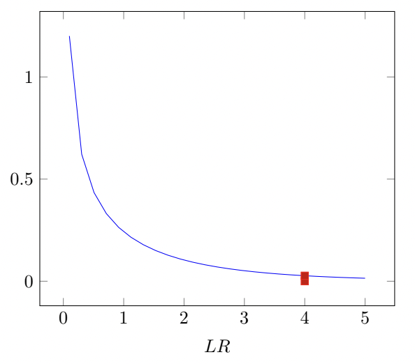
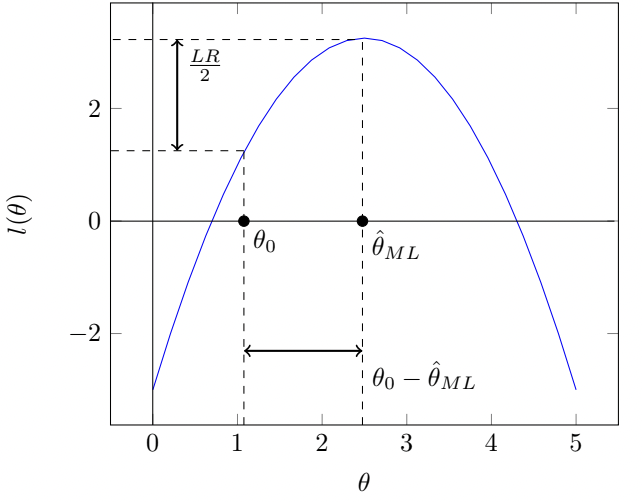

Лекция¶
Ограниченные и неограниченные модели¶
Неограниченная (unrestricted) модель – некоторая модель устройства мира, в истинности которой мы не сомневаемся.
Ограниченная (restricted) модель – модель, которая получается, если в неограниченную модель ввести одно или несколько ограничений на её параметры. В истинности ограниченной модели мы не уверены, и наша цель состоит в том, чтобы статистически протестировать, является ли ограниченная модель также истинной.
Пример
неограниченная модель: \(y_i \sim \mathcal{N}(\mu, \sigma^2)\), \(\mathrm{corr}(y_i, y_j) = \rho\), \(i \ne j\).
ограниченная модель: \(y_i \sim \mathcal{N}(\mu, \sigma^2)\), \(\mathrm{corr}(y_i, y_j) = 0\), \(i \ne j\).
Статистические тесты, которые используются для проверки истинности ограниченной модели, можно разделить на четыре группы:
LR-тест и похожие на него.
LM-тест и похожие на него.
W-тест и похожие на него.
Экзотика.
Постановка задачи¶
Предположим, что необходимые условия регулярности на функцию правдоподобия выполнены. Правдоподобие задаётся в стандартном виде:
Разобъём вектор параметров модели \(\theta\) на 2 части:
где
Для получения ограниченной модели наложим ограничение \(\theta_a = \theta_a^0\). Заметим, что общее число ограничений равно \(r\).
Тест отношения правдоподобия (LR-тест)¶
Идея: правдоподобие ограниченной и неограниченной моделей не должны сильно различаться.
Или в более компактной, но менее формальной форме
Так как ограниченная модель является частным случаем неограниченной, то \(LR\)-статистика всегда неотрицательна. Можно показать, что при верной \(H_0\) и регулярной функции правдоподобия верно, что
то есть \(LR\)-статистика сходится к хи-квадрат распределению с \(r\) степенями свободы.
Из идеи \(LR\)-статистики следует, что если она получается «большой», то скорее, основная гипотеза неверна. Отсюда
Если \(LR > \chi^2_{crit}\), то \(H_0\) отвергается.
Если \(LR \leq \chi^2_{crit}\), то \(H_0\) не отвергается.
Пример
В некотором пруду водятся караси, щуки и крокодилы. Вероятность поймать карася - \(\alpha\), щуку - \(\beta\), а крокодила - \((1 - \alpha - \beta)\). Каждый день в течение 100 дней мы ходили на пруд и что-то ловили. В итоге получилось 20 карасей, 60 щук и 20 крокодилов. Проверьте гипотезу
против гипотезы
с помощью \(LR\)-теста.
Решение:
Вычислим логарифм функции правдоподобия \(\ell = \ln \mathbb{P}\)(получить такие данные).
\(\mathbb{P}\)(20 карасей, 60 щук, 20 крокодилов)\(= C \cdot \alpha^{20}\beta^{60}(1-\alpha-\beta)^{20}\), где
Получаем, что \(\ell = \ln C + 20\ln\alpha + 60\ln\beta + 20\ln(1-\alpha-\beta)\) и
В неограниченной модели мы можем интуитивно оценить \(\alpha\) и \(\beta\) как \(\hat{\alpha} = 0.2\) и \(\hat{\beta} = 0.6\). Те же оценки получатся при честном применении метода максимального правдоподобия. Таким образом мы нашли первый из максимумов - \(\max\limits_{\alpha, \beta} \ell(\alpha, \beta)\) (осталось подставить в \(\ell\) найденные оценки).
Далее с учетом ограничения получаем
Приравниваем производную к нулю и обозначаем за \(\hat{\alpha}^R\) ограниченную оценку параметра \(\alpha\):
Получаем, что \(\hat{\alpha}^R = \frac{4}{15}\), значит \(\hat{\beta}^R = \frac{8}{15}\).
Тогда \(LR\)-статистика равна
Вспомним, что при верной \(H_0\) \(LR \xrightarrow{\mathrm{dist}} \chi^2_1\) (одно ограничение).
Если мы проверяем гипотезу на уровне значимости 5%, то надо взять \(\chi^2_{crit} \approx 4\) (отмечено на графике ниже). Так как \(LR\) получилось \(\approx 2.63\), то \(H_0\) не отвергается.
{kind=link}
Тест множителей Лагранжа (LM-тест)¶
Идея: если теневая цена ограничения (равная множителю Лагранжа) слишком велика, то ограничение следует отвергнуть как несоответствующее данным.
Скалярный случай:
Многомерный случай:
Приведём интуицию такого вида статистики. Рассмотрим задачу максимизации правдоподобия с ограничениями:
Применим метод множителей Лагранжа. Выпишем лагранжиан и найдём его производные:
Из первого уравнения получаем \(\hat{\lambda} = -\frac{\partial l}{\partial \theta_a}\). Это условие показывает один из дополнительных смыслов первой производной логарифма функции правдоподобия - она также является множителем Лагранжа. В соответствии с идеей метода, нам нужно протестировать величину первой производной логарифма правдоподобия. LM-cтатистика получается в предположении о том, что для первой производной логарифма правдоподобия выполняется ЦПТ, поэтому её центрированный и нормированный квадрат будет иметь хи-квадрат распределение.
Тест Вальда (W-тест)¶
Идея: \(\theta_0\) не должна быть слишком далека от \(\hat{\theta}\).
Скалярный случай:
Многомерный случай:
Необходимую дисперсию можно найти при помощи информации Фишера:
Продолжение примера про пруд
Протестируем сформулированную гипотезу при помощи теста Вальда. Для удобства, чтобы \(\hat{\theta}_0\) равнялось 0 заменим наши \(\theta\) следующим образом:
Чтобы найти информацию Фишера, нам понадобятся вторые производные логарифма правдоподобия.
Теперь из этой матрицы достаем нужную нам \(\hat{Var}(\hat{\theta}_a) = \hat{Var}(2\hat{\alpha} - \hat{\beta}) = 4\hat{Var}(\hat{\alpha}) + \hat{Var}(\hat{\beta}) - 2 \cdot 2 \hat{Cov}(\hat{\alpha}, \hat{\beta})=\frac{0.2^2}{\frac{4}{625} + \frac{3}{1250} + \frac{12}{2500}} \approx 2.94.\)
Аналогично \(LR\) тесту сравниваем \(\chi_{crit}^2 \approx 4\) c получившимся значением статистики Вальда. \(H_0\) не отвергается, так как \(2.94 < 4\).
Геометрический смысл тестов¶
На рисунке ниже представлен геометрический смысл тестов.
{kind=link}
Геометрический смысл \(LR\)-теста следует из определения: он измеряет разницу между значениями логарифма правдоподобия в R-точке и UR-точке (вдоль вертикальной оси). Теста Вальда измеряет эту разницу между значениями оценок в R-точке и UR-точке (вдоль горизонтальной оси). \(LM\)-тест измеряет разницу в наклонах касательных, проведённых в в R-точке и UR-точке (равен 0).
Благодарности¶
Гришанин Виктор
Малафеев Михаил
Богданов Игорь